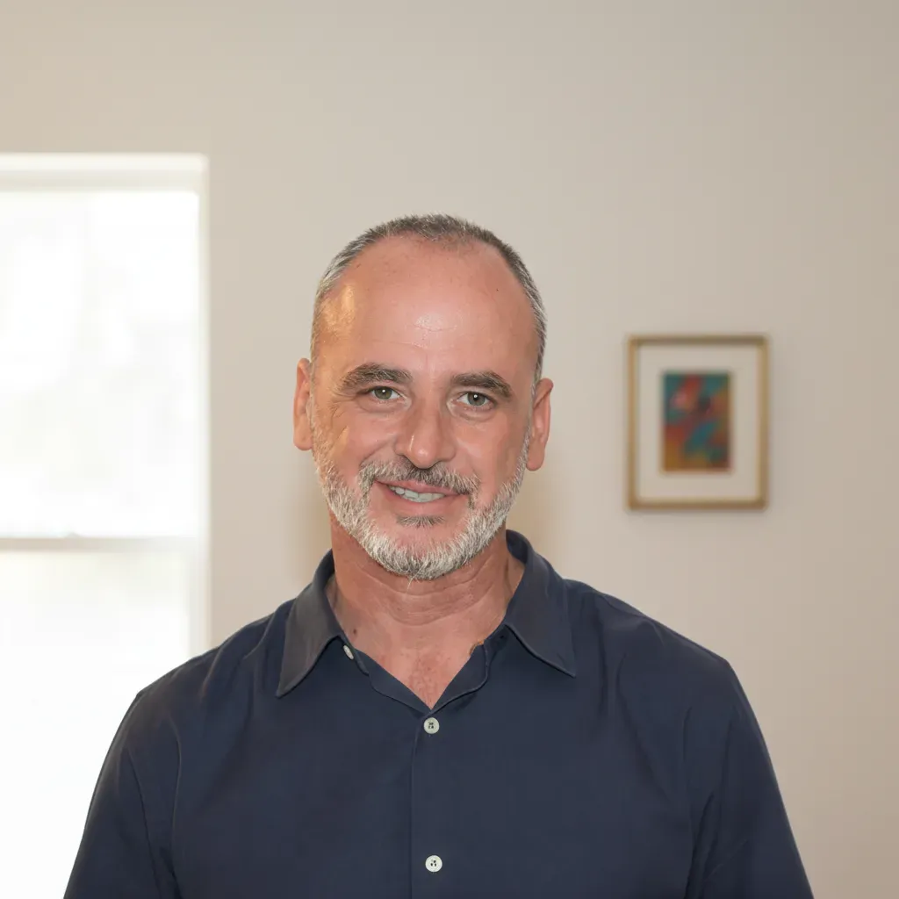
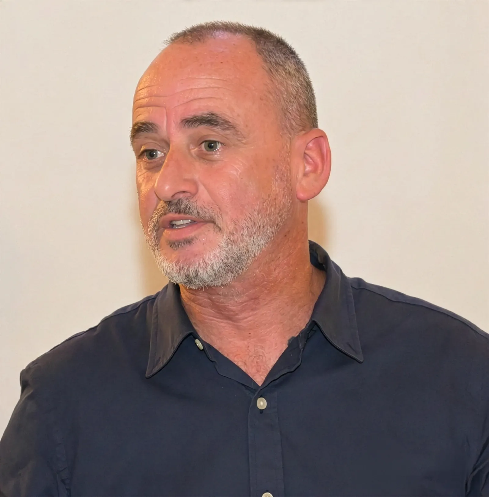
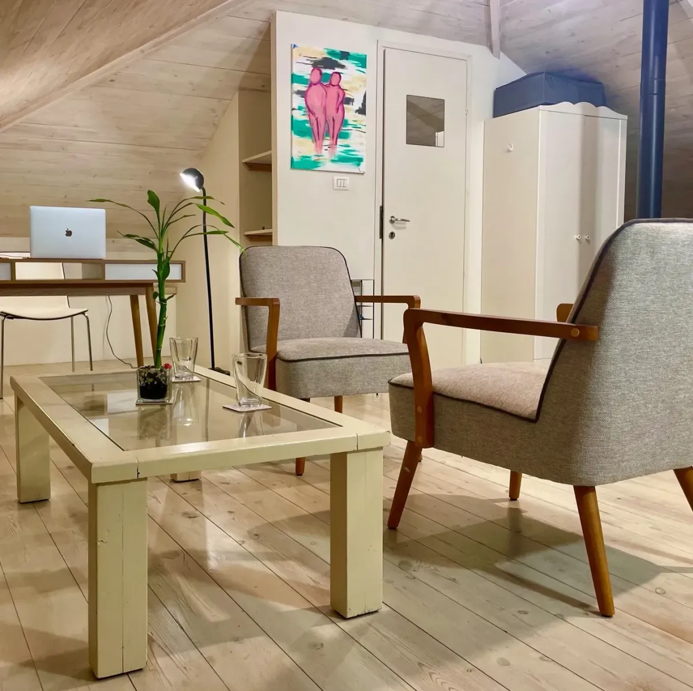

הגיע הזמן לתת לעצמך מקום
טיפול רגשי בפרדס חנה והסביבה


אברהם דגן
פסיכותרפיסט ומטפל רגשי
נעים מאוד, אני אברהם. אני אדם שמאמין ביכולת של כל אחד ואחת מאיתנו ללמוד, להתפתח ולעשות שינויים מהותיים ומשמעותיים בחיינו ובמערכות היחסים שלנו. אחרי שנים כראש צוות בהייטק, משהו בפנים ביקש שינוי. הרגשתי שהשליחות האמיתית שלי נמצאת במפגש בין בני אדם, ולא מול מסכים. עשיתי הסבה לחינוך ועבדתי בליווי חיילים בודדים ללא עורף משפחתי. שם ראיתי מקרוב כמה "מעטפת רגשית" היא לא רק מילה יפה, אלא צורך קיומי. המפגש הזה הראה לי שכל אדם, בכל שלב בחיים, יכול לצמוח ולהשתחרר מהדפוסים המעכבים אותו.
המשך קריאה
לאחר הכשרתי כפסיכותרפיסט במסלול הארבע-שנתי במכון האקומי, צברתי ניסיון קליני בהתמחות במרכז הרפואי 'לב השרון' ובקליניקה פרטית בפרדס חנה, שבה אני עוסק כיום בטיפול במגוון רחב של סוגיות, ביניהן זוגיות ומערכות יחסים, דיכאון, חרדה ומצבי משבר, בניית זהות ועצמאות, ושחיקה בעבודה.
עבודתי הטיפולית נשענת על פסיכותרפיה דינמית בשילוב כלים חווייתיים של מיינדפולנס והאקומי עבור רגעים שבהם המילים לבדן לא מספיקות וצריך לצלול עמוק יותר לרובד החוויתי. התהליך הטיפולי מותאם אישית, והשימוש בכלים אלה נעשה בהתאם לצורך שלך. אם את.ה מרגיש.ה שזה הזמן עבורך להעלות את המודעות בנוגע לעצמך ולדפוסים שמעכבים אותך ולעשות שינויים מיטיבים בחייך, אשמח ללוות אותך בתהליך.
פסיכותרפיה וטיפול רגשי:
המרחב שלך לצמיחה ושינוי
האתגרים שמביאים אותנו לטיפול הם מגוונים - לעיתים הם מופיעים כמשבר נקודתי בעבודה או בזוגיות, ולעיתים כתחושה פנימית חמקמקה של חוסר ערך או חרדה שקשה להסביר במילים. המכנה המשותף בכל אלו הוא היכולת שלנו להפוך את הקושי מ'מחסום' למקור של צמיחה, שמאפשר להשתחרר מהכבלים ולחזק את הביטחון העצמי והחוסן הנפשי.
-
זוגיות ומערכות יחסים
בדידות, חיפוש זוגיות, רצון לקרבה ועולם הדייטים
-
דיכאון, חרדה וערך עצמי
ערך עצמי, משמעות, תקיעות, ריקנות ומתח נפשי
-
בניית זהות ועצמאות
צבא, לימודים ויציאה לחיים עצמאיים
-
שחיקה בעבודה
עומס ולחץ, איזון בית-עבודה, לבטים מקצועיים ושינויי קריירה
-
טראומה ומצבי משבר
התמודדות עם אירועי חיים מטלטלים ועיבוד חוויות קשות
שילוב של גישות למענה רגשי שלם
השילוב בין פסיכותרפיה דינמית לכלים חווייתיים ומעשיים מאפשר ליישם את התובנות ביומיום. לא רק להבין "למה", אלא גם לגבש ארגז כלים אפקטיבי שיאפשר לך לבחור להגיב אחרת בזמן אמת, כך שהשינוי יורגש גם מחוץ לחדר הטיפולים.
-
פסיכותרפיה דינמית
טיפול דינמי מתבסס על כך שחוויות עבר, במיוחד מתקופת הילדות, משפיעות על המבנה הנפשי ועל דפוסי ההתנהגות בהווה. בעזרת התהליך הטיפולי ניתן לחשוף תכנים לא מודעים שמשפיעים על המחשבות, הרגשות וההתנהגות שלנו, ולהוביל לשינוי פנימי עמוק.
-
מיינדפולנס
מיינדפולנס הוא תהליך של קשיבות לרגע המאפשר להשקיט את המערכת הפיזית והנפשית. בעזרת תרגול של תשומת לב לרגע הנוכחי, ניתן לחשוף ולהיחשף לתכנים פנימיים מתוך הלא מודע ללא הפרעה וללא שיפוטיות, ולהביא אותם למודעות בצורה מלאה יותר.
-
האקומי
האקומי היא גישת פסיכותרפיה ממוקדת ומבוססת קשב (מיינדפולנס), אשר פותחה במטרה להציע גישה טיפולית עדינה הנשענת על תהליך הריפוי הטבעי של הנפש. הגישה מבוססת על עקרונות מפילוסופיות הרוח המזרחיות בשילוב עם ידע וטכניקות של הפסיכולוגיה המודרנית.


שאלות ותשובות על טיפול רגשי ופסיכותרפיה
האם התהליך הטיפולי ממוקד בשיחה בלבד, או שהוא
כולל גם
כלים
מעשיים להתמודדות?
התהליך הטיפולי מותאם אישית ומתעצב לפי מה שמתאים לך. השיחה הדינמית מהווה את העוגן להבנת שורשי הדברים, ולפי הצורך והקצב שלך נשלב מיינדפולנס והאקומי המאפשרים לתרגם את התובנות למעשים וליצור שינוי ממשי. יחד, מתוך שיח משותף, נגבש את ארגז הכלים האישי שלך, שיאפשר לך לא רק להבין את עצמך יותר לעומק, אלא גם להרגיש טוב יותר בחיי היומיום.
האם הטיפול מיועד רק למי שחווה מצבי משבר?
ממש לא. למעשה, רבים פונים לטיפול לא בגלל 'מצב חירום', אלא מתוך רצון לשפר את איכות חייהם. הטיפול אכן מעניק עוגן במצבי משבר כמו אובדן, פרידה ועוד, אך הוא נועד במידה רבה גם למי שחווה שגרה שוחקת וחוסר סיפוק ללא משבר נקודתי. בטיפול נוכל לחזק מיומנויות רגשיות ובינאישיות ולשפר את תחושת הרווחה הנפשית. אין צורך להמתין למשבר כדי לתת לעצמך מקום – מגיע לך להפסיק 'לשרוד' את השגרה ולהתחיל לחיות את החיים במלואם.
האם יש אפשרות לטיפול באונליין?
כן, בהחלט. התהליך הטיפולי רגשי מתבצע מהבית באמצעות האינטרנט (זום, גוגל מיט). בשנים האחרונות נעשו מחקרים רבים שבדקו את היעילות של טיפול פסיכותרפי אונליין, והמסקנה של מחקרים אלו היא שטיפול פסיכותרפי אונליין עובד ביעילות. ניתן לראות שאין הבדל ממשי בין טיפול פנים אל פנים לבין טיפול דרך האינטרנט, ואף במקרים רבים הטיפול דרך האינטרנט מעצים את יכולת הריפוי מכיוון שהמטופלים מרחוק לוקחים יותר אחריות על עצמם ועל התקשורת עם המטפל, ולעיתים אף מרגישים בטוחים יותר להיות מטופלים מרחוק.
כמה זמן נמשך בדרך כלל טיפול נפשי?
משך הטיפול אינו קבוע, שכן התהליך הטיפולי נבנה באופן ייחודי עבור כל מטופל. אורכו משתנה בהתאם למטרות הטיפול, סוג הקשיים ושיטת הטיפול המתאימה ביותר עבורך. במקרים שבהם קיים צורך נקודתי, ייתכן כי טיפול קצר-מועד ייתן מענה מיטבי. במצבים מורכבים המשפיעים על מספר תחומי חיים, או כשעולה רצון להעמקת ההתבוננות העצמית, סביר כי תידרש תקופה ממושכת יותר ויתאים טיפול ארוך-טווח. עולמנו הפנימי והתפיסות שלנו לגבי עצמנו, אחרים והעולם מתעצבים לאורך שנים, ולכן נדרש זמן כדי להביא לשינוי משמעותי.
איך נראה המפגש הראשון ומה הצעד הראשון שצריך
לעשות
כדי
להתחיל?
המפגש הראשון בקליניקה בפרדס חנה הוא הזדמנות להיכרות ראשונית ולבירור הצרכים שלך, במרחב בטוח ונינוח. במהלך הפגישה ננסה להבין יחד מה הביא אותך לפנות לטיפול, אילו תחומים בחייך היית רוצה לבחון או לשנות, ומה עשויות להיות מטרות התהליך הטיפולי. משם נוכל להתחיל לבנות יחד את הדרך הטיפולית, בקצב שמתאים לך. הצעד הראשון הוא פשוט: ליצור איתי קשר לקביעת פגישה ראשונית, ולהגיע בדיוק כפי שאת או אתה. עצם הפנייה היא כבר התחלה של שינוי.
סביבה בטוחה ומכילה

חלל מרגיע ומכיל
אור טבעי ושקט
מי שמביט החוצה - חולם;
מי שמביט פנימה - מתעורר
— קארל יונג
נדבר
השאירו פרטים ואחזור אליכם בהקדם לתיאום פגישת היכרות
תודה! הפנייה התקבלה.
אחזור אליך בהקדם לתיאום פגישת היכרות.